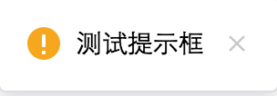
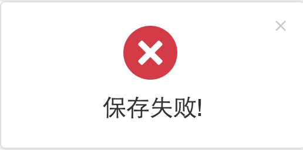
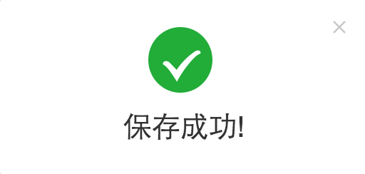
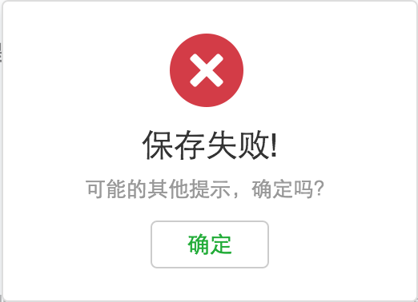
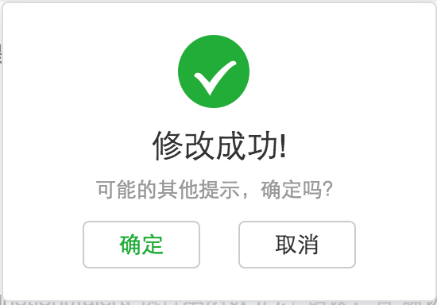
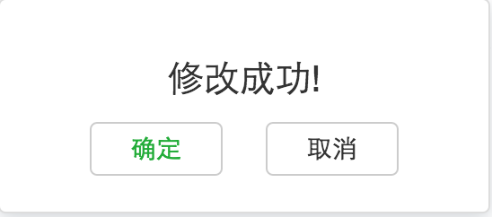
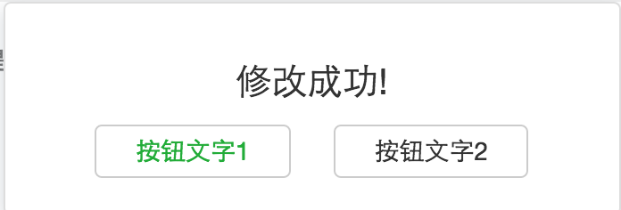

tipLayer.sm('测试提示框'); 提示

tipLayer.lg('保存失败!','tip-error'); 错误

tipLayer.lg('保存成功!','tip-success'); 成功

tipLayer.lg('保存失败!','tip-error',1,'可能的其他提示，确定吗？',function(){alert('执行本函数')} ); 错误，有‘确认’按钮

tipLayer.lg('修改成功!','tip-success',2,'可能的其他提示，确定吗？',function(){alert(111)},'close'); 成功，有‘确认’、‘取消’按钮

tipLayer.lg('修改成功!','no-icon',2,'',function(){alert(111)},function(){alert(222)}); 无图标 + 两个按钮

tipLayer.lg('修改成功!','no-icon',2,'',function(){alert(111)},function(){alert(222)},'按钮文字1','按钮文字2'); 按钮文字
